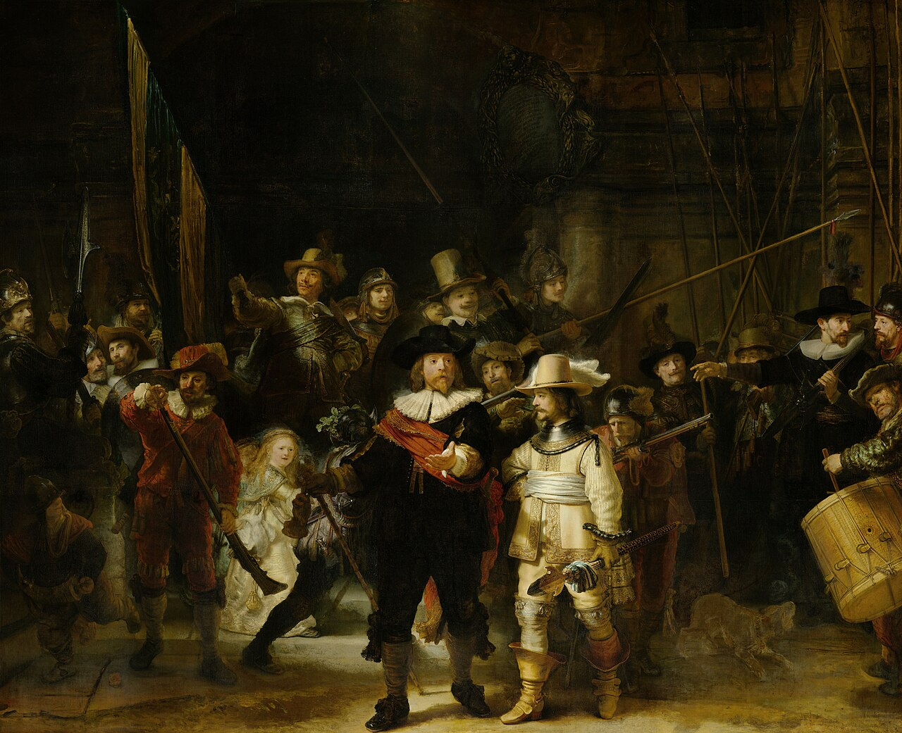
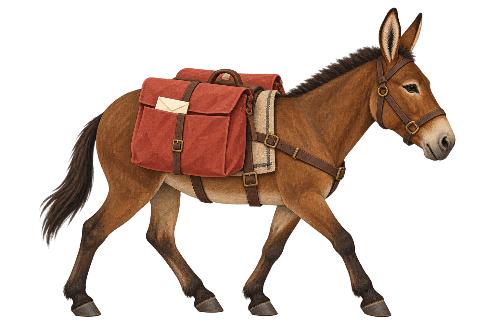

A masterpiece.
Down to the
last pixel.
How close can you get to a painting without ever standing in front of it?
Start with the painting. Then step into the scale of the museum’s 2022 digital image.
Where this comes from
The Rijksmuseum reports 0.005 mm per pixel side and 8,439 input photographs. Our diagrams use that resolution; they are not microscopic photographs. Museum source, January 2022 ↗
Overview: Rembrandt, The Night Watch. Public-domain reproduction via Wikimedia Commons ↗. This overview is not the museum’s 717-gigapixel file.

An ordinary reproduction starts the journey. The next steps show a measured diagram of the image’s resolution.
The last
nine miles
have hooves.
For Supai, home of the Havasupai people, the mail’s final leg is a mule train.
About nine miles to the Supai Post Office, five days a week. The return journey takes about five hours.
Where this comes from
USPS Postal Facts, May 2026 ↗ reports 10–22 mules per delivery and these route totals. This is a schematic journey, not a navigable map or a measured elevation profile. The illustration and playback do not represent speed at particular locations.

Illustrated route · not to geographic scale. Slide to explore, or follow the delivery from rim to village.
The copper
is in the
other coin.
Which contains more copper: a modern U.S. penny or a nickel?
Pick a coin, or go straight to the comparison.
Where this comes from
U.S. Mint specifications ↗: penny, 2.5 g × 2.5% copper = 0.0625 g; nickel, 5 g × 75% copper = 3.75 g. Dividing gives 60. These are specification-based amounts, not measurements of individual coins. Illustrations do not depict composition by area.
A guess is optional. Curiosity is enough.
Penny
0.0625 gof copper
Nickel
3.75 g of copperModern U.S. compositions. The coin drawings are illustrative; the reveal compares copper mass.